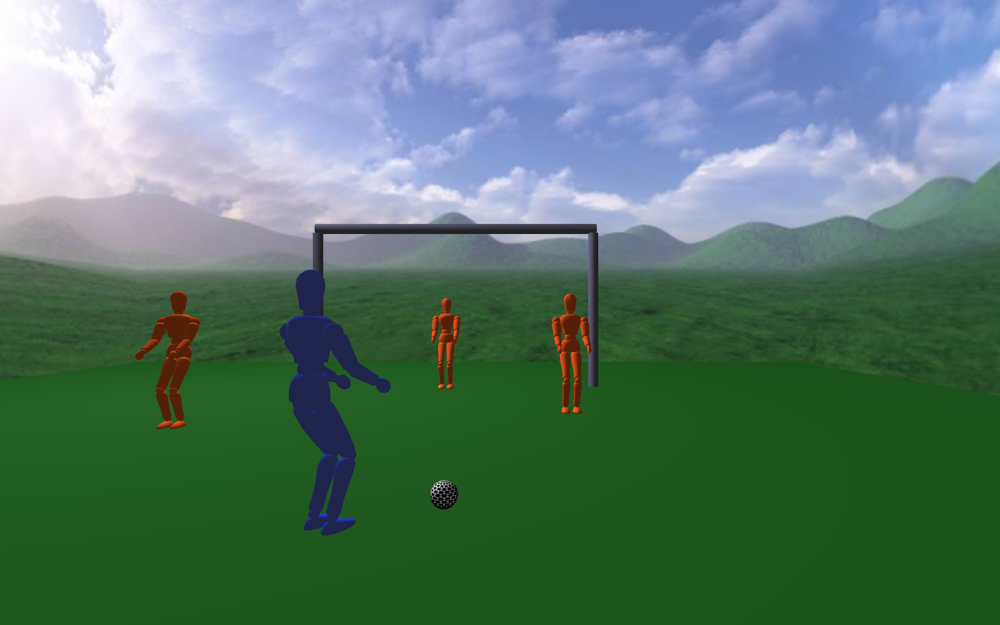
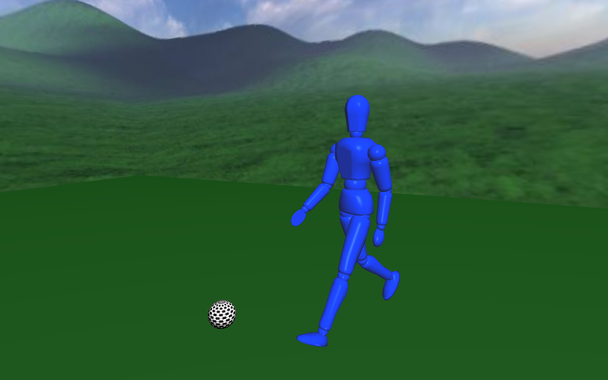
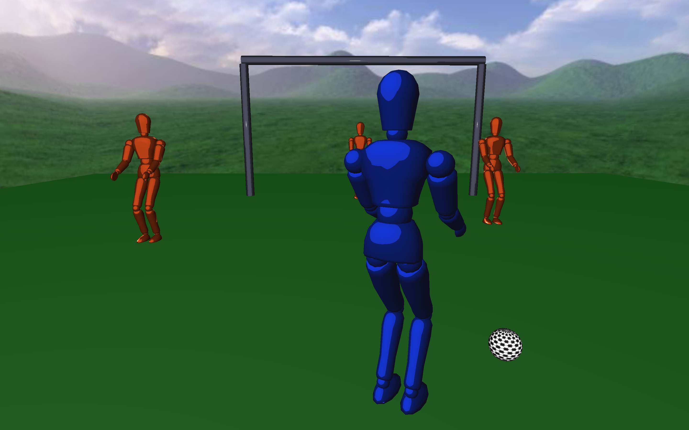
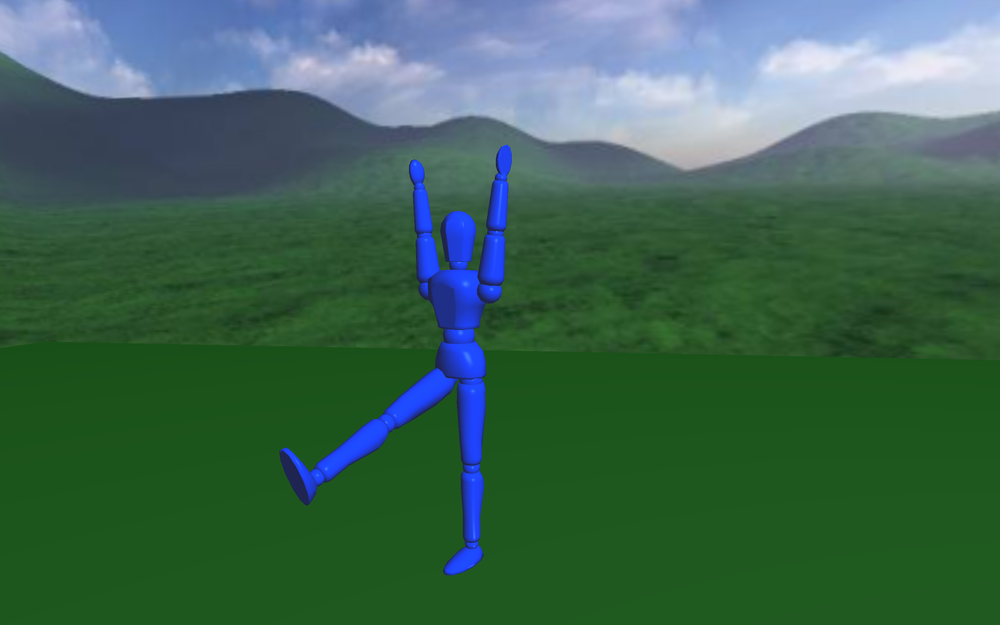
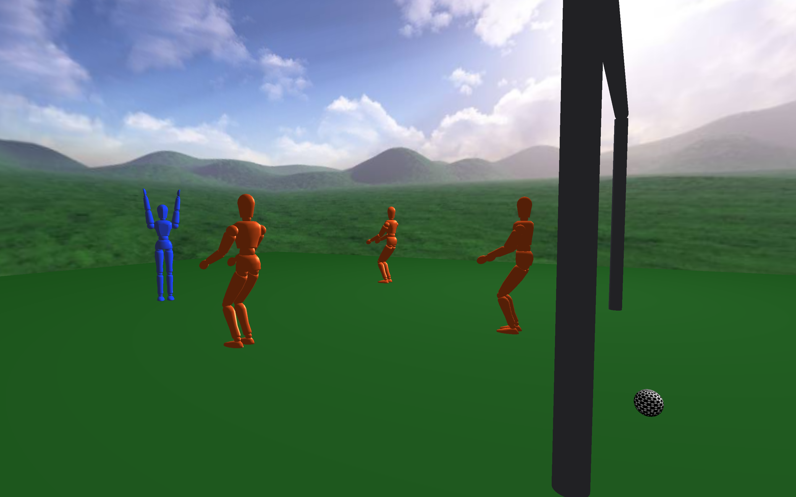

Penalty Kick Simulation - CPE 471
by Dimitri Charitou

Introduction
For my final project, I implemented a soccer penalty kick simulation. The simulation includes three defensemen, a kicker, textured soccerball, and a goal. When the space bar is pressed, the kicker will do a kick windup and when the spacebar is pressed again, the kicker will kick the ball as long as his foot makes contact with the soccerball. The kicker will either make a goal and celebrate or miss. The project has two lighting modes: cel shaded or blinn-phong lighting.
Features
- The first mode is a realistic Blinn-Phong lighting effect.

- The second mode is a cel shaded lighting effect so all the players and goal have a cartoon look.

- When the player kicks the ball, the soccerball acts as a realistic rigidbody. It collides with the kicker's foot and when the kicker misses, the ball bounces back. Implementing physics especially deepened my knowledge of computer graphics technology because it illustrated the connection between computer graphics and realistic behavior. A YouTube video of the project can be found here!! https://www.youtube.com/watch?v=GLXEdO33P6Y&feature=youtu.be
- The kicker has three big animations: windup, kicking, and celebrating.

- A game camera where the user can interact and explore the world.

Takeaways
Learning more about how to implement Ordinary Differential Equation (ODE) based physics and rigidbodies was very interesting. This class and project especially challenged my debugging skills because graphics code is difficult to debug. If there was more time, I would have liked to learn how to do more realistic animation techniques, such as skinning and keyframes because implementing the animations was very tedious with hierarchically modelled models. In addition, I would add in a dive animation for the goalie.
References
- Baraff and Witkin's Siggraph's papers on physically based modeling: https://www.cs.cmu.edu/~baraff/sigcourse/notesb.pdf
- Previous student Reed Garmsen's project website
- Research regarding cel shading
- Skybox was found at Custom Maps Makers